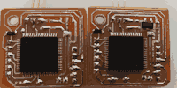

RANGMANG is an RGB controller based on the ATmega128 microcontroller, programmed using BASCOM.

The following table introduces various LED strips and their specifications:
| LED Strip Model | Operating Voltage | Control Type | Addressable | Special Features |
|---|---|---|---|---|
| WS2811 | 12V | Digital | Yes | Suitable for long strips |
| WS2812B | 5V | Digital | Yes | Built-in chip in each LED |
| WS2813 | 5V | Digital | Yes | Resistant to data line failure |
| WS2815 | 12V | Digital | Yes | Industrial-grade, low voltage drop |
| SK6812 | 5V | Digital | Yes | Supports RGBW (white channel) |
| SK9822 | 5V | Digital | Yes | High-speed, similar to APA102 |
| APA102 | 5V | Digital (Clock + Data) | Yes | Fast animations, dual-wire control |
| TM1814 | 12V | Digital | Yes | RGBW, high-power applications |
You can access the BASCOM source code from the ZIP file below:
Using USBasp or other programmers, you can easily flash the microcontroller using the file below:
Refer to the following document for serial UART programming standards and instructions:
You may customize the microcontroller's power regulation section based on your needs: